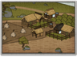

Enables
- Buildings: 

Basic Building Statistics (can be modified by difficulty level, arts, skills, traits and retainers)
- Cost: 600
- +200 to wealth from farms in this province
- +1 per turn to town growth from commerce within this province
- Provides food: 1
Description
The peasant's back is bent; the rice grows tall.
Fields physically organise the work of villages, making sure that everyone has enough good land for their crops. Agriculture is one of the oldest organised human practices. However, subsistence farming means everyone has to work hard just to have enough to eat. A field system allows a little more sophistication in the way that food is produced. Land can be left fallow, to recover its fertility, on an organised basis; or different crops can be planted each year to maintain the goodness of the soil. None of this organised activity is possible without a system of fields, and the extra food grown allows people to spend their lives on activities other than farming. It is only when there is a food surplus that potters, smiths, weavers, and a host of other craftsmen can live. A food surplus also means enough for valuable bureaucrats and important tax collectors to eat.